![Salle à manger le soir : table ovale effet marbre blanc sur deux pieds à lattes en chêne clair, six chaises en velours taupe à pieds dorés sur un tapis taupe, trois suspensions en corde blanche à bord ondulé, bougeoirs dorés et bougies allumées sur un plateau en marbre, vase crème avec gypsophile, verres à vin, buffet taupe avec miroir rond rétroéclairé, pampa et lampe en verre ambré, olivier dans un grand pot beige, rideaux taupe et voilage devant une baie vitrée avec vue sur la ville la nuit, gorge LED au plafond](../assets/img/looks/look016-salle-a-manger-taupe-doree.jpg)
Look n°16
Salle à manger taupe et dorée, ambiance du soir
Une salle à manger du soir, toute en taupe, marbre et doré, avec la ville qui brille derrière la baie vitrée. Voici les articles pour recréer cette ambiance chez toi.
Prix au 05/11/2026
-
Table à manger ovale effet marbre JULIETTE
Extensible de 160 à 200 cm (rallonge de 40 cm rangée dans le plateau), 90 cm de large, 75 cm de haut. Plateau effet marbre blanc et 2 pieds en panneaux de lattes couleur chêne clair. Livraison par transporteur : 42,99 €.
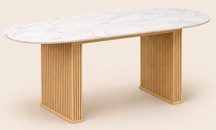
169,99 €Voir sur Amazon -
Chaises en velours matelassé taupe, pieds dorés (lot de 6)
62 × 58 × 82 cm, velours doux à coutures verticales, dossier enveloppant et pieds fins dorés. Le lot de 6 correspond aux 6 chaises de l'image (moins cher que 3 lots de 2).
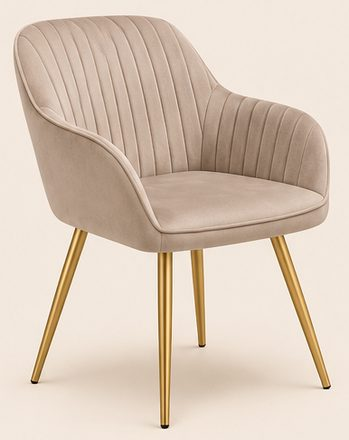
337,88 € le lot de 6Voir sur Amazon -
Suspension vague en corde blanche Galt
Ø 38 cm, abat-jour en fils de corde blanche à bord ondulé, hauteur 95 cm avec le fil. L'image en montre 3 au-dessus de la table. Ampoule non fournie.
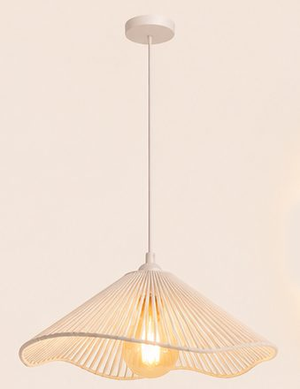
27,98 €Voir sur Amazon -
Miroir rond LED rétroéclairé Ø 80 cm
Sans cadre visible, halo de lumière tout autour, intensité réglable.
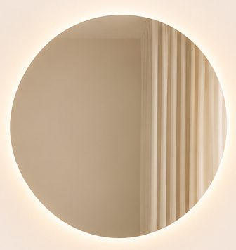
127,90 €Voir sur Amazon -
Tapis taupe à poils ras 200 × 290 cm
Toucher fausse fourrure, poils de 12 mm, lavable. Sur l'image, il paraît légèrement marbré : le vrai est taupe uni.
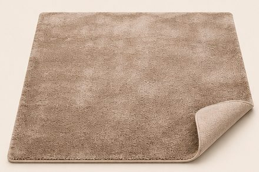
119,99 €Voir sur Amazon -
Buffet taupe sans poignée Garda 160 cm
160 × 35 × 70 cm, taupe mat, ouverture par pression. En haut, 2 tiroirs qui forment 2 rectangles ; en dessous, 4 portes. Dessus et socle fins effet chêne. Sur l'image, le buffet est suspendu, tout taupe, aux angles arrondis, sans ce découpage tiroirs/portes ni liseré chêne.
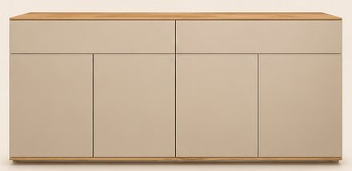
-
Voilage blanc et rideaux en velours taupe
Voilage blanc translucide et rideaux en velours taupe occultants, tous en 140 × 260 cm, vendus par 2.
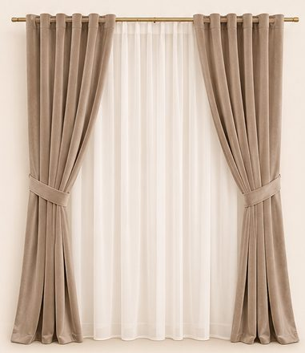
-
Olivier artificiel 150 cm et son grand pot beige
Olivier de 152 cm livré dans un petit pot de 20 cm. Le grand pot beige à côtes ondulées de l'image (Ø 39 cm, 53 cm de haut) est vendu à part : on y pose le pot de l'olivier.
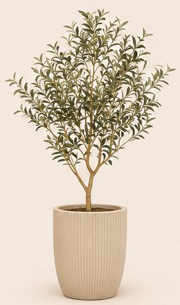
-
Vase effet pierre 23 cm et gypsophile blanche
Vase crème effet ciment patiné, 25 × 18 cm, de forme ovoïde (sur l'image, il est plus rond) ; gypsophile artificielle, 160 brins de 30 cm.
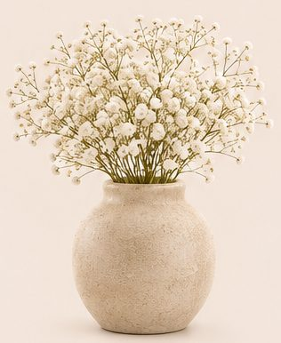
-
Bougeoirs dorés (lot de 6) et bougies blanches 25 cm
Bougeoirs de 33, 29 et 23 cm (2 de chaque), coupelle en tulipe sur tige fine ; 12 bougies blanches de 25 cm. 3 bougeoirs sur la table, 3 sur le buffet.
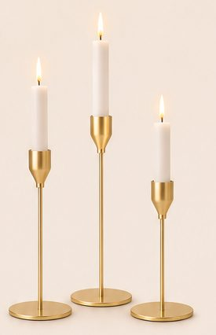
-
Verres à vin KROSNO Avant-Garde (lot de 6)
Cristal sans plomb, 550 ml, 24 cm de haut.
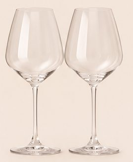
37,99 €Voir sur Amazon -
Plateau effet marbre à poignées dorées
40,6 × 30,5 cm (44,5 cm avec les poignées), bords de 5 cm. Sur l'image, les poignées sont cachées par les bougeoirs.
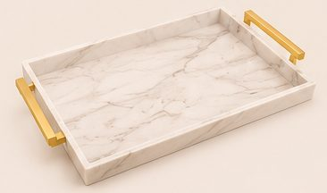
36,99 €Voir sur Amazon -
Grand vase effet pierre 30 cm et herbe de la pampa
Même vase que le n° 9 en plus grand (30 × 18 cm) ; 10 tiges de pampa beige naturelle.
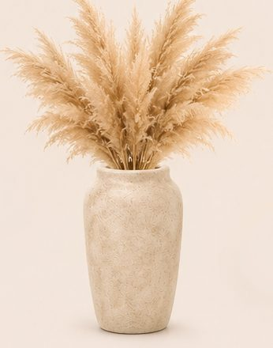
-
Lampe en verre ambré strié sur pied doré
Ø 20 × 24,5 cm, globe en verre ambré à côtes et pied en laiton brossé. Ampoule E27 non fournie. Sur l'image, le verre est lisse et plus fumé, et le pied doré brossé qui sert de support est beaucoup plus haut.
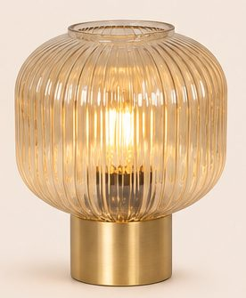
-
Ruban LED COB blanc chaud 5 m
Ligne de lumière continue, sans points, avec télécommande. L'image en utilise 3 rouleaux : la gorge du plafond et le dessous du buffet.
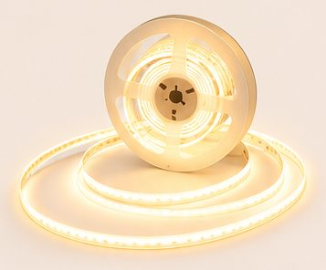
29,99 €Voir sur Amazon
Enregistrer ce look sur Pinterest
Comment naît un lookComment chaque article est choisi, mesuré et vérifiéImage d'inspiration générée par IA. Prix indicatifs, revérifiés toutes les deux semaines.